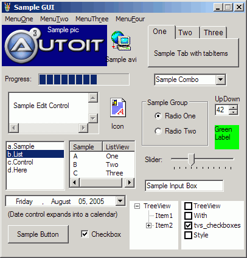

AutoIt has the ability to create simple Graphical User Interfaces (GUIs) that consist of windows and controls.
A GUI consists of one or more windows and each window contains one or more controls. GUIs are "event driven" which means you react to events - like a button that is clicked. You spend most of your time idling and waiting for an event to happen - this is a little different to a normal script where you are in control of what happens and when! Think of it as waiting by the door for the postman - you sit there until a letter pops through the postbox and then you look at the letters and decide what to do with them - this is exactly how GUIs work - you wait for the postman to come to you.
Of course, you may choose to do other tasks while the GUI is active - for example you might use the GUI functions to create an elaborate progress box that you update while your script performs complex actions.
All users will be familiar with controls - anything you click on or interact with in a window is a type of control. The types of controls that can be created with AutoIt are listed below - you will have used most of them in other Windows programs.
| A plain piece of text. | |
| A simple button. | |
| A single line control that you can enter text into. | |
| A multi-line control that you can enter text into. | |
| A box that can be "checked" or "unchecked". | |
| A set of circular buttons - only one can be active at once. | |
| A list with a dropdown box. | |
| A list. | |
| A date picker. | |
| A picture. | |
| An icon. | |
| A progress bar. | |
| A group of controls that are contained in tabs. | |
| A control that can be added to input controls. | |
| Display an AVI format clip. | |
| A menu across the top of the window. | |
| A menu that appears when you right click inside the window. | |
| A control similar to the windows file-explorer. | |
| A control similar to the windows sound volume control. | |
| A control displaying columns information. | |
| A control displaying item in a listview control. | |
| A control displaying graphics drawn with GUICtrlSetGraphic. | |
| A dummy user control. |
Here is an example of a single window GUI that contains many of the controls available. As you can see it is possible to create very detailed GUIs!

Controls are created with the GUICtrlCreate... set of functions. When a control is created a Control ID is returned. The most important things to note about a control ID is that:
These are the main functions that you will need to create a GUI. They are just the basics though, there are many more when you are ready to create some really advanced GUIs.
| Function | Explanation |
| GUICreate | Create a window. |
| GUICtrlCreate... | Create various controls in a window. |
| GUISetState | Display or hide the window. |
| GUIGetMsg | Poll the GUI to see if an event has happened (MessageLoop mode only) |
| GUICtrlRead | Read the data in a control. |
| GUICtrlSetData | Set/change the data in a control. |
| GUICtrlSet... | Change various options for a control (color, style, etc.) |
Before writing any GUI scripts you must include the file GUIConstants.au3 at the beginning of your script - this contains all the variables and constants needed to write GUI programs.
First let's create a window, call it "Hello World" and make it 200 by 100 pixels in size. When a new window is created it is hidden - so we must "show" it.
#include <GUIConstants.au3>
GUICreate("Hello World", 200, 100)
GUISetState(@SW_SHOW)
Sleep(2000)
If your run the above script you will see a window open and close after 2 seconds. Not very interesting...let's add some text and an OK button. The text will be added at position 30, 10 and the button at 70, 50 and the button will be 60 pixels wide.
#include <GUIConstants.au3>
GUICreate("Hello World", 200, 100)
GUICtrlCreateLabel("Hello world! How are you?", 30, 10)
GUICtrlCreateButton("OK", 70, 50, 60)
GUISetState(@SW_SHOW)
Sleep(2000)
That's pretty good, but how do we make the GUI react to us clicking the button? Well, this is where we must make a decision as to how we will process events - via a MessageLoop or via OnEvent functions.
As mentioned above there are two basic GUI modes: MessageLoop mode and OnEvent mode. The modes are simply two different ways of reacting to GUI events. The mode you choose will depend on personal preference, and to some extent the type of GUI you wish to create. Both modes are equally capable of creating any GUI you wish but sometimes one mode is more suited to a task than the other.
The default mode is the MessageLoop mode. To switch to OnEvent mode use Opt("GUIOnEventMode", 1).
Message-loop Mode (default)
In the Message-loop mode your script will spend the majority of its time in a tight loop. This loop will simply poll the GUI using the GUIGetMsg function. When an event has occurred the return value of the GUIGetMsg function will show the details (a button is clicked, the GUI has been closed, etc.).
In this mode you will only receive events while you are actively polling the GUIGetMsg function so you must ensure that you call it many times a second otherwise your GUI will be unresponsive.
This mode is best for GUIs where the GUI is "king" and all you care about is waiting for user events.
See this page for a more detailed explanation of the MessageLoop mode.
OnEvent Mode
In the OnEvent mode instead of constantly polling the GUI to find out if anything has happened you make the GUI temporarily pause your script and call a pre-defined function to handle the event. For example, if the user clicks Button1 the GUI halts your main script and calls a previously defined user function that deals with Button1. When the function call is completed the main script is resumed. This mode is similar to the Visual Basic forms method.
This mode is best for GUIs where the GUI is of secondary importance and your script has other tasks to perform in addition to looking after the GUI.
See this page for a more detailed explanation of the OnEvent mode.